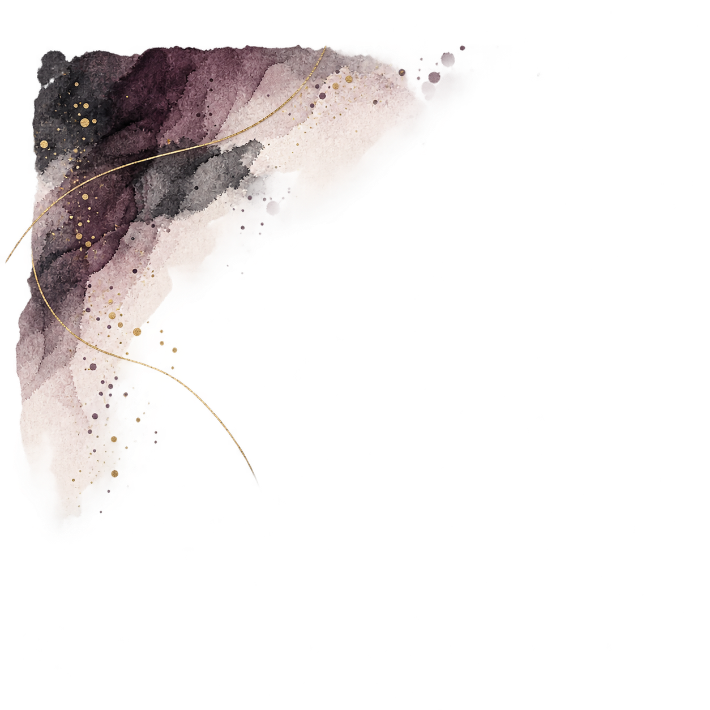
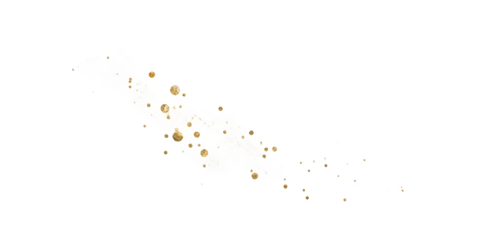

Appointments / Meetings
| Time | Details / Purpose |
|---|
Students to Follow Up
| Student | Reason / Focus | Action / Next Step |
|---|
Life Skills GO
| Student | Emotion / Context | Checked In | Sentral Note Completed |
|---|
Tasks / Admin


Sentrals
| Student | What to Write Up |
|---|
Calls / Email / Messages
| Contact | Purpose / Outcome | Follow Up? |
|---|